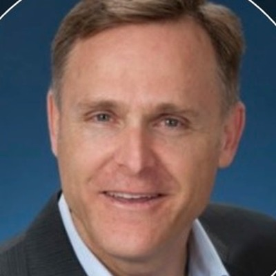

Team
Joe Kane is a co-founder of Enabled Learning Systems, helping organizations strengthen operational learning, leadership capability, and continuous improvement — responsibly supported by AI-enabled tools.
At Toyota, Joe served as Associate Dean of the University of Toyota, helped launch the Center for Lean Thinking and the Center for The Toyota Way, and led the rollout of the Toyota Production System Certification Program.
Following his Toyota career, Joe applied that same operational discipline in healthcare consulting and improvement work, demonstrating how structured learning and CI can translate across industries.

Russ Bankson brings more than two decades of global experience in talent development, organizational learning, leadership development, continuous improvement, and Toyota Way education.
Russ served in leadership roles across North America, Europe, and Japan, including Talent Development, Organizational Development, TPS Administration, Executive Development, Learning Strategy, and Organizational Change Management.
Russ is recognized for connecting leadership development, organizational learning, and continuous improvement principles into practical systems that strengthen capability and performance.